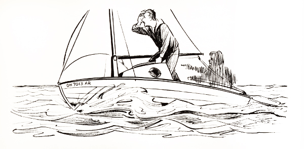

"TINKERBELLE"
Chapter 8
By mid morning the wind had fallen off sufficiently to resume sailing safely, so I pulled in the sea anchor, rehung the rudder at the stern and ran the sails aloft. It felt good to be moving forward again, able to steer instead of drifting stern first with scant maneuverability.
During the brief storm we had drifted steadily, though slowly, southwestward. I was sure my dead reckoning was highly inaccurate, for any one of half a dozen good reasons, but I wasn't especially worried about it because there was nothing but open sea for hundreds and hundreds of miles to the southeast or east. Even to the northeast we had three hundred or more miles of ocean between us and the coast of Nova Scotia and that graveyard of ships, Sable Island. So why worry? As long as we moved on a course between, say, 45° (NE) and 135° (SE), we could keep on going for days, maybe even weeks, without any danger of running against the land. We really didn't have to know exactly where we were for quite a few days yet.
I had a hunch, though, that we were many miles to the south of the shipping lanes; in fact, I believed we were some miles south of the parallel of 40° N latitude, which was roughly ten miles to the south of the more southerly of the two main shipping lanes between New York and the English Channel. I didn't want to go any farther south than this because it would add extra miles to our voyage. My plan was to sail more or less directly eastward until we reached the meridian of 40° W. This would take us to the south of most of the foggy Grand Banks area and what the pilot chart called the mean maximum iceberg limit. Then, at 40° W, we would sail northeastward parallel to, but well away from, the great circle shipping track between the Panama Canal and Bishop Rock in the Scilly Isles, at the entrance to the English Channel.
If the voyage became too difficult, so filled with hardships that I couldn't go on, I would make for Flores, in the Azores, and either rest for a few days before continuing or end my trip there. I had a chart of the island to use in case that became necessary.
In my mind's eye I pictured the voyage as a tremendous countdown in degrees of longitude from 71° W, the meridian at which we had entered the open ocean near Martha's Vineyard, to 5° W, the approximate meridian of Falmouth, England, our destination. I viewed this huge countdown as a series of ten-degree steps, except for the first one, which was eleven degrees (71° W to 60° W), and the last one, which was only five degrees (10° W to 5° W). I thought it would be useful, psychologically, if I divided my main objective of a transatlantic voyage into this series of lesser goals. The first of these to aim for, then, was the meridian of 60° W; and after that would come 50° W, 40° W, 30° W and so on.
After we reached 40° W longitude, we would also begin a single, ten-degree countup latitude, from 40° N, my anticipated latitude at that time, to 50° N, the approximate latitude of Falmouth. In fact, I thought we had better begin a short countup immediately because, according to my hunch, we were some miles to the south of 40° N latitude. Consequently, when we started sailing, it was on a course of 50°; that is, just a little eastward of true northeast.
By this time I had gone without sleep for more than forty-eight hours, except for the nap I'd had in the cockpit the second day out, and although I'd been taking stay-awake pills to keep myself alert, my body's desperate need for rest (ashore it had been used to a full eight hours' sleep every night) was becoming acute, unmistakable. Or rather, it should have been unmistakable. Actually, I didn't recognize the symptoms immediately
because the pills I was taking contained a chemical mood elevator that made me feel great even though I was on the borderline of exhaustion. The symptoms were so unexpectedly fantastic, so far removed from any previous experience, that I didn't realize their import until many days later, after I'd encountered them once or twice more. Lack of sleep may not have been the sole cause; the pills themselves could have been partly to blame. But, whatever the cause, I floated off in the early afternoon into a realm of wild fantasy, a strange world of mixed illusion and reality such as I had never known before. I lived through an hours-long hallucination.
It proved an interesting subject for contemplation, after it was all over, but while it was occurring it was most vexatious, decidedly unpleasant. It made me waste a whole afternoon sailing hither and yon about the ocean. And the incident was so unusual, so completely different from any earlier happening in my life, that I have great difficulty in describing it satisfactorily, especially for anyone who has not had a similar experience. I suppose, in a sense, I went off the deep end, out of my mind, into a Never Land where real things and dream things existed side by side without distinction; where reality and imagination merged, leaving no hints of which was which. I have attributed what took place to lack of sleep and stay-awake pills, but anxiety and, even more likely, loneliness, as my mother had feared, may have contributed to it, too. Like a person in a hypnotic trance, I simply began seeing and hearing things that weren't really there.
I became aware, gradually, that I was not alone; someone a man, was on Tinkerbelle with me. This man had no face that I can recall; nor can I remember what he wore, although his clothing seemed to be appropriate for sailing. He was a quiet man with very little to say, and he was friendly. At first I reciprocated with equal friendliness, but later on his presence became inexpressibly annoying, intolerable.
It developed that he was on Tinkerbelle as a seagoing hitchhiker and I was taking him to his home, which was on a small island somewhere in our vicinity. (Of course, there really was no island in that part of the Atlantic.) But we had a terrible time finding the place. We sailed this way, and that way, and around, and back, and north, and south, and east, and west, trying to catch sight of a scrap of treeless land with a couple of houses on it.
Sometime during the afternoon I recalled the storm Tinkerbelle and I had been through the night before and, fearful that we might be hit by a southeast wind that would. batter
 |
us toward a lee shore, I decided I should try out the storm sails I'd made of heavy canvas to see if they would enable us to beat away from such a hazard. However, my phantom companion thought I should take him to his home before I spent any time experimenting with the storm sails, and we got into a slight hassle about it. My arguments prevailed, though, for at sea the skipper's word is law. I tried out the storm sails.
I replaced the white genoa with a minute jib and the red main with a small trysail. The heavy-weather suit of canvas seemed to fit the boat all right, but beyond that the tryout was a flop; there simply wasn't enough wind to move the boat with such small sails. The only adequate tryout would be in a storm.
So I reset the original sails and we continued our island hunt, to the great satisfaction of the hitchhiker. In fact, preposterous as it seems, my airy chum took over the tiller and I became the passenger. Such is the remarkable stuff of hallucinations. On we sailed. We never seemed to talk out loud; that is, we seldom actually moved our lips, but we did converse in a miraculous, soundless way. I kept pressing my shipmate for descriptions of the island and for clues to the course to be sailed to reach it, all the while straining my eyes to spot a bit of sand or rock.
My companion then admitted that the island would be hard to find because it rose only a few feet above the level of the sea and was mostly rocky, the rocks being a blue that blended almost perfectly with the color of the sea-camouflage par excellence. Several times I thought I'd spotted the island and cried out to the phantom to steer in that direction, but when we drew closer it became evident that what I'd seen was merely rock-like wave forms. It was discouraging and irritating. This bloke I had on board was wasting my time on a wild-goose chase. I grew more and more peevish, more and more impatiently eager to find his blasted rock pile and put him on it so that I could continue on my way. I had started out as a good Samaritan, but now I was entirely disenchanted with that role.
I guess he sensed my rising exasperation because he kept saying, "It won't be much longer. Just be patient, we'll soon be there."
By early evening I was in a frenzy. I'm reluctant to own up to it because of what it may indicate about my character, but I was ready to run amok and toss my unwanted guest into the sea. Then I could resume my own hunt, for England. But at that very moment, in the nick of time, he yelled, "There it is! There it is!" And, sure enough, there it was. I saw it too.
It was a solid patch no bigger than a city block, and if it was composed of anything besides sea-blue rocks I couldn't see what it was. No sand was visible anywhere, and no vegetation of any sort. There was nothing but rock, rock, rock. Even the two
small houses at the center of the island were made of the same type of rock, which made it hard to distinguish between them and their surroundings. About the only way you could tell they were houses was by the windows and doors.
Some people came out of one of them and waved to us and we waved back. The hitchhiker (I never learned his name, unfortunately) wanted to sail right up to the shore, but I was determined not to risk Tinkerbelle's life on such foolishness. Why, she'd be battered into splinters! So, to be on the safe side, I took over the steering again.
We sailed around the island looking for a place to dock, but there was no suitable place. Good Lord! Now what? Was I going to have to put up with this guy even longer? I'd had about all the delays I could take. I was on the point of telling him to swim for it or else when, through the magic that exists only in fantasies, he was suddenly ashore with his family, grinning and waving me on my way. I waved back happily, delighted to be rid of him at last, and without wasting another minute I resumed my original course of 50°. The daylight was waning fast and I wanted to get as far away from that island as I could before turning in for some badly needed sleep.
Except for the two-and-a-half-hour nap, I had now gone without sleep for about fifty-five hours and I was drooping dangerously. I couldn't keep my eyes open. I'd force them open and they'd stay open for a time, but inevitably the eyelids would grow heavy and slowly close. I'd go on sailing with closed eyes for a little while and then a wave would jolt Tinkerbelle and I'd start to keel over, all but dead to the world. I'd catch myself just in time to avoid cracking my skull on the deck or rolling overboard. Several times, in my somnambulistic state, I put Tinkerbelle into an accidental jibe that sent the boom zinging around with a murderous slash. The spar itself hit me only once, painfully. But another time it drew the mainsheet across the bridge of my nose, giving me a bad rope burn that took many days to heal.
It was perilous to continue while so near the edge of complete exhaustion; I still had enough of my wits about me to realize that. I simply had to have some rest; my whole being cried out for it. So, finally, somehow, I put out the sea anchor, struck the sails, unshipped the rudder and crawled into the cabin. Luckily, the sea was fairly calm, making it safe to risk sleeping in the cabin; but even if it hadn't been calm I think I would have slept there that night. I had to.
I lay down on top of my supplies on the starboard side, pulled the blanket over me and dropped into unconsciousness as if I'd been dealt a knockout blow.
TABLE OF CONTENTS | NEXT CHAPTER